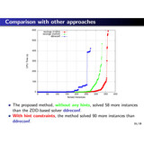
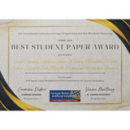
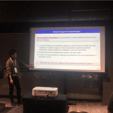

|
Knowledge Representation and Reasoning at Nagoya University 名古屋大学大学院情報学研究科・情報学部 番原・宋 研究室 |
研究
|
【パズル】
Nagoya University Polyomino World (名古屋大学ポリオミノの世界)
公倍図形パズルの web ページを公開しました．ポリオミノから生まれる様々な公倍図形をお楽しみください．世界初の図形も含まれてますよ． |
|

|
Multi-Objective Combinatorial Reconfiguration Considering Cost and Length by
Answer Set Programming: Algorithms, Encodings, and Empirical Analysis
ECAI 2025 (CORE2023 rank A) repository / paper (in print) 組合せ遷移に関する話題です． 解集合プログラミングを用いた多目的組合せ遷移最適化問題の解法アルゴリズムの研究です． |
|
|
The ASP-based Nurse Scheduling System at the University of Yamanashi Hospital
ICLP 2025 (CORE2023 rank A) repository / paper (in print) 山梨大学医学部附属病院で実際に使われているナーススケジューリングシステムの話題です． 解集合プログラミングを使って実装されています． |

|
A SAT-based Method for Counting All Singleton Attractors in Boolean
Networks
IJCAI 2025 repository / preprint 遺伝子制御ネットワークの解析などに応用がある状態遷移系の Boolean Network の不動点をSAT技術を用いて計数する研究です． |

|
SAT-Based CEGAR Method for the Hamiltonian Cycle Problem Enhanced by
Cut-Set Constraints
SAT 2025 repository / paper 代表的なNP完全問題であるハミルトン閉路問題に対して，カットセット制約を用いたSAT型CEGAR手法を適用する研究です． |
|
 |
Dominating Set Reconfiguration with Answer Set Programming
Theory and Practice of Logic Programming repository / slides 組合せ遷移に関する話題です． 解集合プログラミングを用いた支配集合遷移問題の解法の研究です． |
|
Large Neighborhood Prioritized Search for Combinatorial Optimization with Answer Set Programming
KR 2024 (CORE2023 rank A*) repository / slides ASPの系統的探索と巨大近傍探索を融合した Large Neighborhood Prioritized Search (LNPS) を提案し，巡回セールスマン問題などの組合せ最適化問題に対して，ASPソルバーの求解性能を向上することに成功しています． |
|
|
 |
ASP-Based Large Neighborhood Prioritized Search for Course Timetabling
LPNMR 2024 (CORE2023 rank B) repository / slides KR 2024 論文で提案した Large Neighborhood Prioritized Search (LNPS) を大学の1週間の時間割を作成する問題に適用した結果を報告しています． |
|
|
Combinatorial Reconfiguration with Answer Set Programming: Algorithms, Encodings, and Empirical Analysis
WALCOM 2024 (CORE2023 rank B) repository / slides 組合せ遷移に関する話題です． 解集合プログラミングに基づく組合せ遷移問題の解法アルゴリズムを提案し，独立集合遷移問題を用いた評価実験を報告しています． |
|
Hamiltonian Cycle Reconfiguration with Answer Set Programming
JELIA 2023 (CORE2023 rank A) repository / slides ハミルトン閉路問題を解く新しい ASP 符号化を提案し，既存符号化と比較した優位性を示しています． また，ハミルトン閉路遷移問題への拡張も行っています． |
|
|
 |
Solving Vehicle Equipment Specification Problems with Answer Set Programming
PADL 2023 (CORE2021 rank B) repository / slides 解集合プログラミングを用いた車両装備仕様問題の解法を提案している．車両装備仕様問題は，自動車のカタログに記載されているモデル/グレードと装備の一覧表を作成する組合せ最適化問題の一種である． |